Sensalut
Blanqueamiento profesional en casa
¡Ilumina la sonrisa y beneficialos dientes!
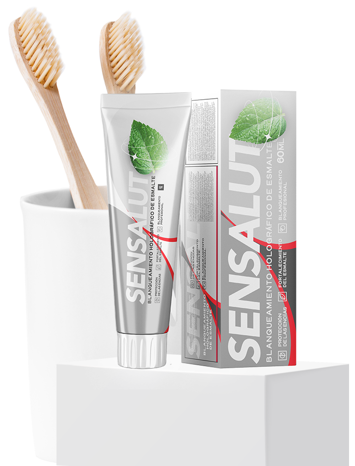

Blanqueamiento suave para 7-10 tonos
Nanocomposición patentada

Protección dental integrado

Buena salud bucodental
Qué tipo de pasta, tales dientes
Los dientes se vuelven amarillos a medida que envejecemos. La capa de esmalte se adelgaza y se rompe bajo la influencia de la masticación y los ácidos de los alimentos y bebidas. La pasta de dientes debería proteger contra estos procesos, pero en la mayoría de los casos no es logrado.
Por lo tanto, con la edad, los dientes de la mayoría de las personas se vuelven amarillos y, en algunos casos, las manchas de comida y el color del esmalte juntos dan un tinte grisáceo.
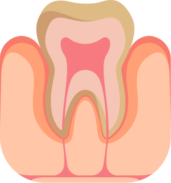
Amarilleamiento
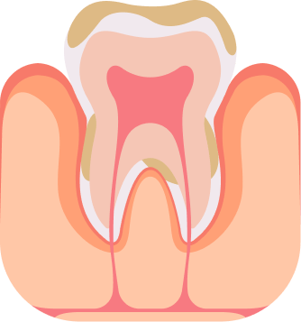
Sarro

Carie
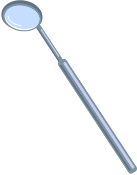
Blanqueamiento bajo control
La mayoría de los procedimientos de blanqueamiento tienen un efecto extremadamente negativo sobre el esmalte dental.
Las sustancias abrasivas dañan el esmalte, adelgazan la capa protectora y provocan la formación de caries y el desarrollo de microflora patógena en la cavidad oral.
Líder en blanqueamiento dental
El blanqueamiento dental requiere un enfoque integrado. Al utilizar la pasta Sensalut, se consigue un blanqueado del esmalte gracias a la acción de enzimas y nanopartículas de pulido. Los iones de calcio, que penetran rápidamente en la red cristalina del esmalte, reducen la hipersensibilidad de los dientes y también los protegen eficazmente contra la caries.
Esta pasta está especialmente recomendada para los amantes del café y el té, así como para los fumadores.

Blanqueamiento de 7 a 10 tonos en un ciclo de uso*

Eliminación de placa dental de forma efectiva

Remineralización del esmalte

Eliminación de sarro

Reducción del sangrado de las encías
Protección de salud bucal de bacterias y gérmenes
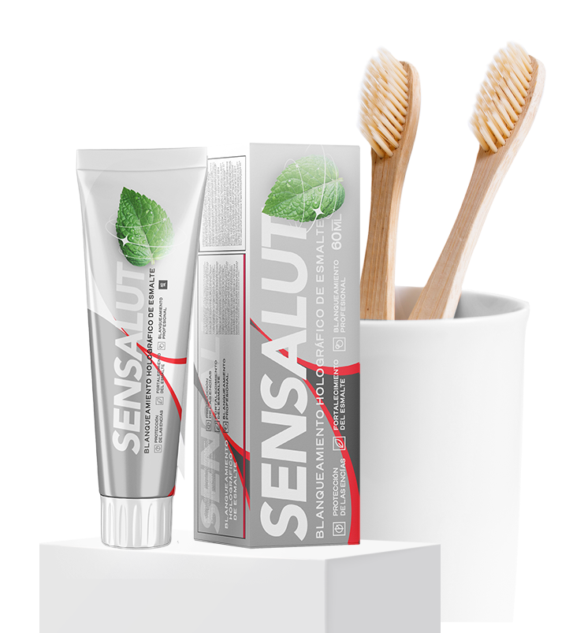
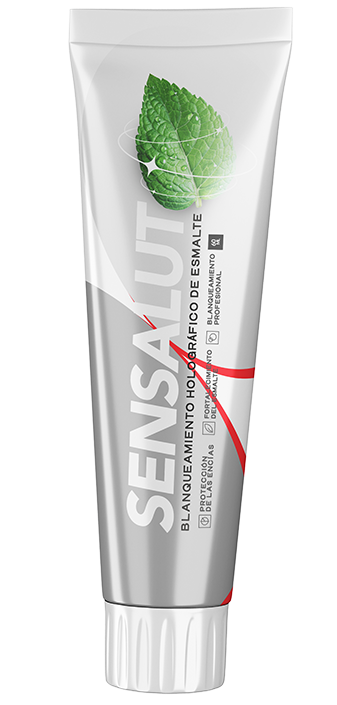
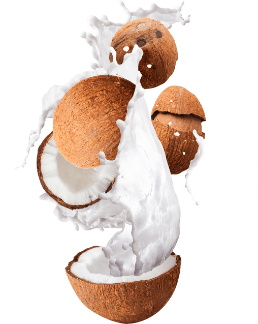
La fórmula patentada Sensalut se basa en el último sistema de limpieza de múltiples etapas que contiene gránulos especiales de pulido. Debido a la estructura especial de los gránulos en la etapa inicial del cepillado de los dientes, eliminan la placa de forma cualitativa, rápida y segura.
En el proceso de cepillado de los dientes, los gránulos se descomponen en partículas cada vez más pequeñas, que en la etapa final proporcionan el pulido del esmalte, dándole una blancura resplandeciente.
La eliminación de alta calidad de la placa coloreada está garantizada por la acción de una enzima proteolítica de origen vegetal.

Blanqueamiento dental que devuelve la blancura natural

Protege contra la formación de placa y sarro

Proporciona una protección integral para los dientes y las encías
Componentes
Sensalut
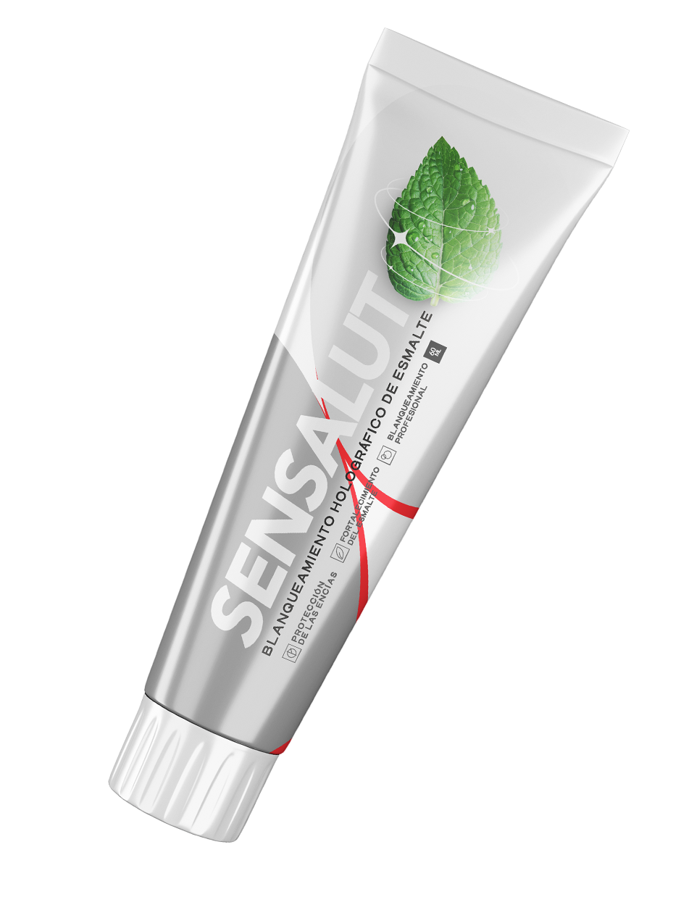
Granos de cacao

Protege el esmalte dental de la caries. Eliminan la placa, incluso pueden hacer frente al sarro.
Papaína
Descompone perfectamente la capa de proteína que cubre la superficie del esmalte dental y absorbe la placa, y también protege eficazmente contra la caries.
Caolín
Satura los dientes con microelementos, pule suavemente y previene los depósitos dentales, tiene un efecto cicatrizante. Pule suavemente los dientes, eliminando la placa y destruyendo las bacterias. Produce remineralización por su contenido en sales y minerales. Tiene un alto poder blanqueador.
Coco
Es un antiséptico natural: su ácido láurico destruye las bacterias que provocan el desarrollo de placa y caries. Refresca el aliento y previene el desarrollo de la microflora patógena en la boca, que causa el mal aliento.
Opinión experta
Luis García, dentista estético
Con el tiempo, se pierde el color natural de los dientes. Los dientes se vuelven amarillos, a pesar del profilaxis efectivo. Esto es consecuencia de los contactos constantes con una variedad de bacterias por el tabaquismo, la exposición a tintes de esmalte (té, café, bebidas carbonatadas, etc.). Sensalut es la primera pasta en mi experiencia que permite no solo conservar la blancura natural de los dientes, sino también blanquearlos sin ayuda de dentistas. Este resultado se consigue gracias a los iones y nanopartículas que componen el Sensalut. La uso yo personalmente y la prescribo a los pacientes para el blanqueamiento y la protección de los dientes.
Ordenar ahora Sensalut
Blanqueamiento profesional en casa
¡Ilumina la sonrisa y beneficialos dientes!
Blanqueamiento suave para 7-10 tonos
Nanocomposición patentada
Protección dental integrado
Buena salud bucodental
Reseñas
Marta Gonzalez
Durante el día bebo café y té, y son las bebidas que contribuyen al oscurecimiento de los dientes. Pero usando esta pasta de dientes, noto que mis dientes no se oscurecen. Con respecto al efecto blanqueador, creo que la pasta funciona, pero no debes contar con un efecto instantáneo. Con el uso regular, los dientes se ven blancos. Por otro lado, además elimina la placa perfectamente, pero aquí también es importante tener en cuenta a calidad del cepillo de dientes, así como un correcto cepillado de los dientes. Después del cepillado, mis dientes están suaves y brillantes.
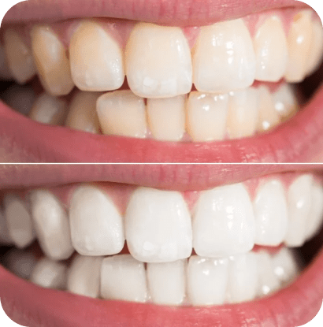
Jose Hernandez
Me gusta la pasta dental Sensalut. Limpia perfectamente los dientes y elimina el mal aliento, y en el dentífrico estas funciones son las más importantes para mí. Si lo ves en oferta, cómpralo inmediatamente. Es la mejor alternativa para cada día.
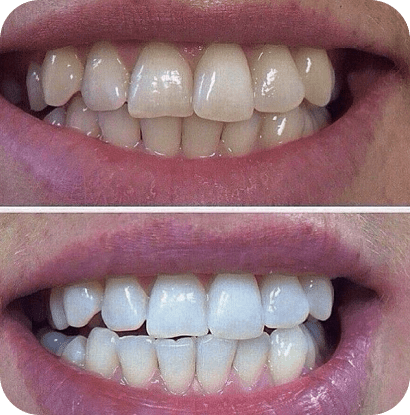
Pedro Ramirez
Después de cepillarse los dientes por la mañana, la placa casi no se forma durante el día. Incluso si come y bebe mucho... ¡Solo al final de la tarde (o más bien, por la noche) cuando se siente que la cavidad bucal requiere atención y quiere que la pongan en orden. La pasta limpia bien los dientes, elimina la placa ya formada y protege contra oscurecimiento del esmalte.